Briefing de rodaje · TenderYou · viernes 6 de noviembre
Fotos del equipo para usarlas en todas partes
Una mañana, de 8:30 a 14:00, en dos edificios. Aquí tenéis qué fotos vamos a hacer, a quién y a qué hora le toca, qué ropa traer y lo poco que necesitamos de vosotros. Si queréis cambiar algo, decídnoslo hoy.
Gente real trabajando, con un estilo cálido y minimalista
La contratación pública tiene fama de gris. Las fotos tienen que contar lo contrario sin perder confianza: un equipo cercano al que puedes poner cara y llamar. Cada referencia muestra una de estas ideas.
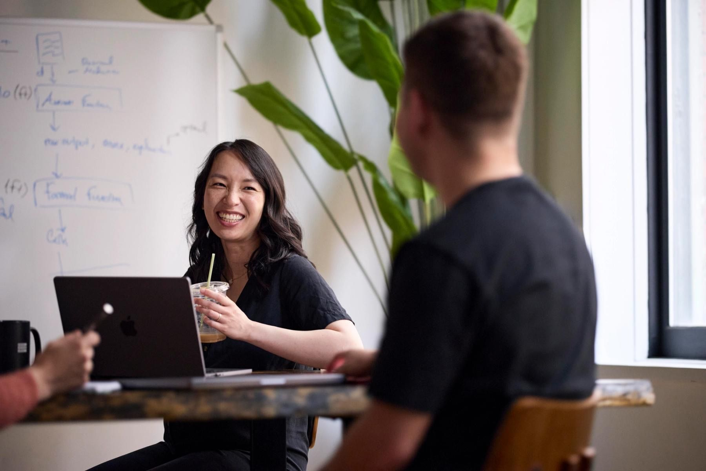
No posáis: trabajáisProfundidad
Nadie posa: ella explica algo de verdad y se ríe. El hombro desenfocado mete al que mira dentro de la escena.
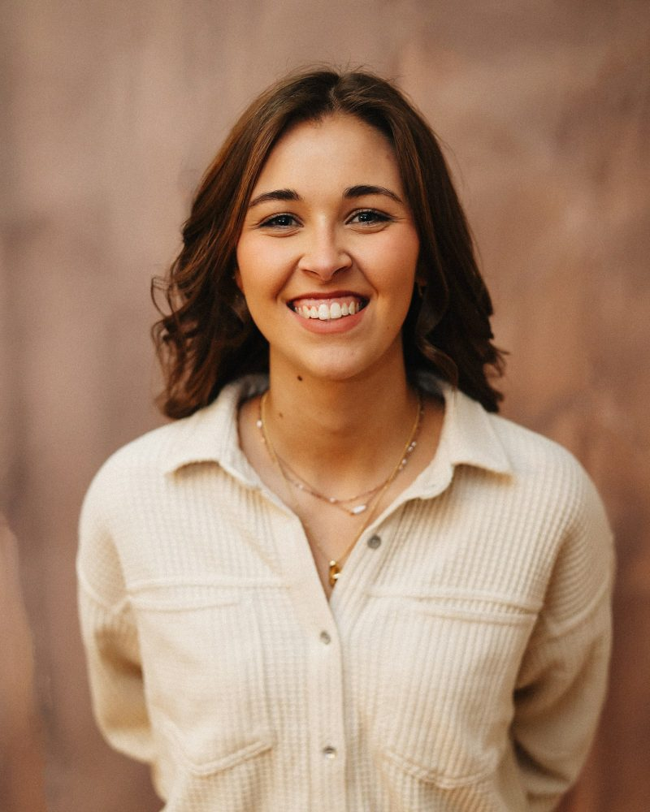
Cerca y claroLuz suave
De cintura para arriba, pared lisa, luz suave y una sonrisa que sale sola. Así serán los retratos.
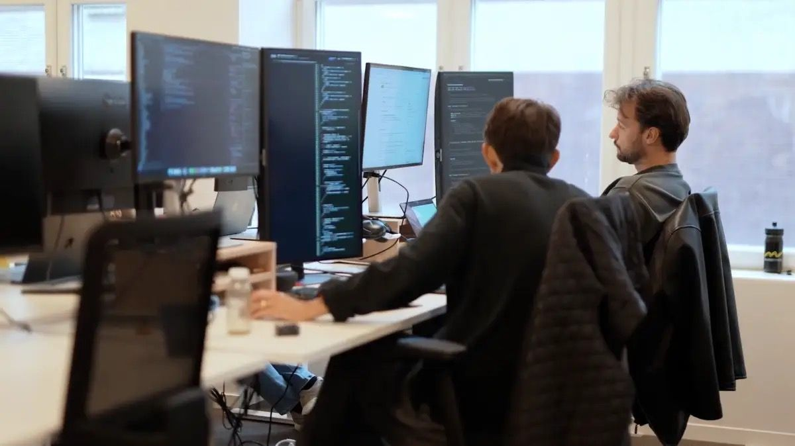
Luz cuidadaNo posáis: trabajáis
Luz suave y pantallas desenfocadas: se entiende qué hacen sin leer nada.
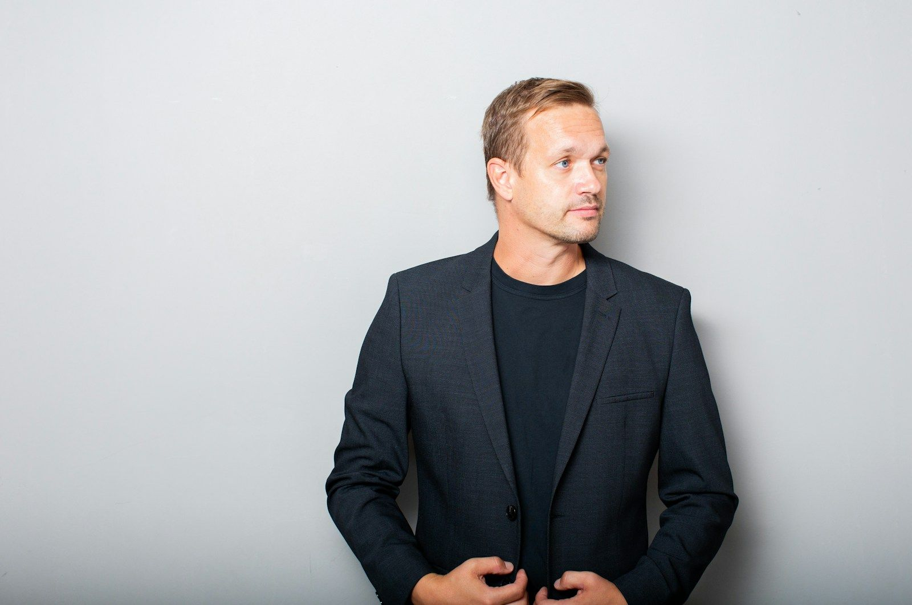
Aire para el textoColor sobrio
Colores apagados y un solo tono oscuro. Dos tercios de pared limpia para poner el texto encima.
ProfundidadColor sobrio
Tres capas: alguien de espaldas delante, la conversación en medio y la ventana detrás.
Detalles realesCálido y minimalista
El detalle también cuenta el trabajo: el pliego, el bolígrafo y el portátil, sin caras.
Un retrato por personaMisma luz, mismo fondo y misma distancia, para que la serie se vea como un equipo.
11 retratos en colorPara LinkedIn, la firma de correo, los posts de bienvenida y la prensa.
y en blanco y negroLa misma foto, para la web, que hoy ya va en blanco y negro.
Lista de fotos
Las 42 fotos que nos llevamos seguro
Cada foto lleva una referencia con las indicaciones encima (aire para el texto, de dónde entra la luz, el encuadre) y su ficha técnica. Pulsa «Indicaciones» para ver la referencia limpia.
☀ Ventana de lado● Corte por la cintura● Pared lisa
Referencia: sirve para el encuadre, la luz y la actitud, no es el sitio ni la persona.
A111 fotos
Retrato de cintura para arriba, mirando a cámara
Quién: Cada persona del equipo, una a una (11)
Para qué: Web (Sobre nosotros y «Habla con un experto»), foto de perfil de LinkedIn, firma de correo, posts de bienvenida y prensa
Formato4:5 verticalPlanoMedio cortoÓptica35–50 mmAperturaf/2.8–4LuzVentana lateralCámaraAltura de ojos
Plano
Medio corto: de la cintura a la cabeza, como los retratos de vuestra web. Sin cortar nada de la cabeza
Formato
Vertical 4:5. De la misma foto sale el 1:1 y el círculo de LinkedIn, recortando la cara. En color y en blanco y negro
Márgenes
Ojos en el tercio superior. Poco aire sobre la cabeza (un 6-8 % del alto), hombros y brazos completos a los lados y corte por la cintura, nunca por una articulación
Tiro de cámara
A la altura de los ojos, recto y nivelado. Ni picado ni contrapicado
Pose y acción
Cuerpo girado unos 30° hacia la ventana, cara a cámara, sonrisa natural (sale de una pregunta, no de «sonríe»). Sin brazos cruzados
Luz
Natural de ventana, de lado (45°), suave. Un reflector blanco en el lado de sombra. Luces del techo apagadas
Fondo y profundidad
Pared clara y lisa a 1,5-2 m, ligeramente desenfocada. Nada detrás de la cabeza
Óptica y ajustes
35-50 mm · f/2.8-4 · 1/200 · ISO 200-800 · balance fijo
AIRE PARA TEXTO · dos tercios
☀ Luz suave lateral● Cuerpo hacia el hueco libre
Referencia: sirve para el encuadre, la luz y la actitud, no es el sitio ni la persona.
A211 fotos
Plano medio con aire a un lado
Quién: Cada persona, en el mismo turno que A1 (11)
Para qué: Presentaciones a clientes, artículos y premios en horizontal, anuncios con el texto al lado y cabeceras
Miguel en el tercio izquierdo; la arquería desenfocada ocupa el resto y sirve de hueco para texto
Tiro de cámara
A la altura de los ojos, recto, verticales de las columnas rectas
Pose y acción
De pie, apoyado o con las manos en los bolsillos, mirada a cámara
Luz
Sombra abierta del soportal: la luz llega rebotada desde el patio, suave, de frente-lado
Fondo y profundidad
Columnas y arcos muy desenfocados detrás
Óptica y ajustes
50-56 mm · f/2 · 1/500 · ISO 100-400
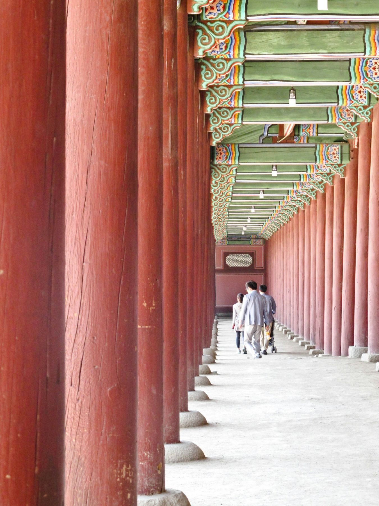
● Cámara en el eje de la galería● Miguel camina hacia cámara● Las columnas llevan la mirada hacia él
Referencia: sirve para el encuadre, la luz y la actitud, no es el sitio ni la persona.
E21 foto
Miguel caminando bajo los arcos
Quién: Miguel
Para qué: Portadas de carrusel, stories y artículos
Formato4:5 y 9:16PlanoEntero, caminandoÓptica35–50 mmAperturaf/2.8Velocidad1/500
Plano
Entero o de rodillas arriba, caminando hacia cámara
Formato
Vertical 4:5 y 9:16
Márgenes
Miguel centrado; los arcos marcan líneas de fuga hacia él
Tiro de cámara
A la altura del pecho, recto, en el eje de la galería
Pose y acción
Caminando natural, mirando al frente o de lado
Luz
Sombra abierta de la galería
Fondo y profundidad
Perspectiva de la galería, fondo desenfocado
Óptica y ajustes
35-50 mm · f/2.8 · 1/500 · AF continuo con seguimiento
Extras
Si el día acompaña
Las hacemos en los márgenes. Si no da tiempo, no falta nada: todo lo necesario está en la lista de arriba.
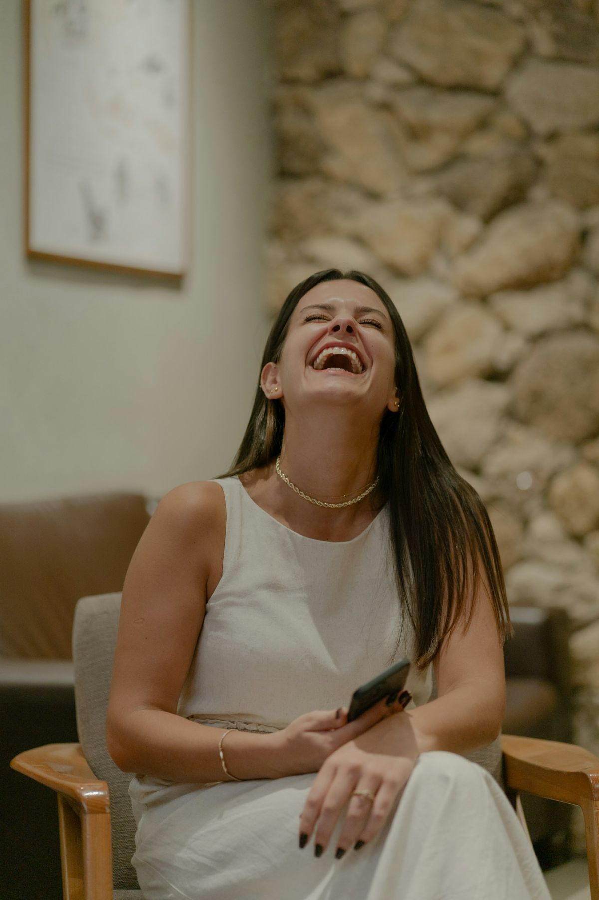
X1 Retratos naturales entre toma y tomaCarrusel «Las personas detrás de TenderYou» y posts · Riendo, mirando fuera de cámara, mismo set que A1.
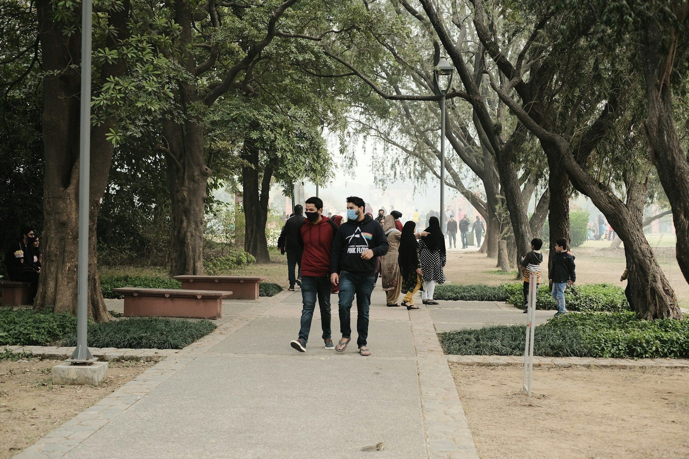
X2 El equipo caminando hacia cámaraWeb y LinkedIn de empresa · Justo después de B1, en la rampa del Impulsa.
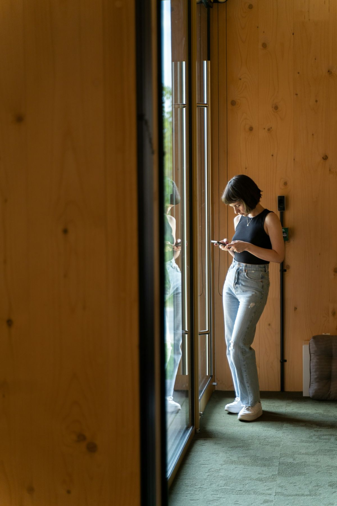
X3 De pie con el móvil en el pasillo de maderaCorreos de avisos y fondos de web · Vertical, luz cálida del pasillo.X4 Detalles: manos, teclado y TenderYou en pantallaRecursos para posts y vídeos · Muy cerca, f/2, pantalla desenfocada.X5 Miguel y Diego conversando mientras caminanArtículos y entrevistas · Bajo los soportales de la Laboral.
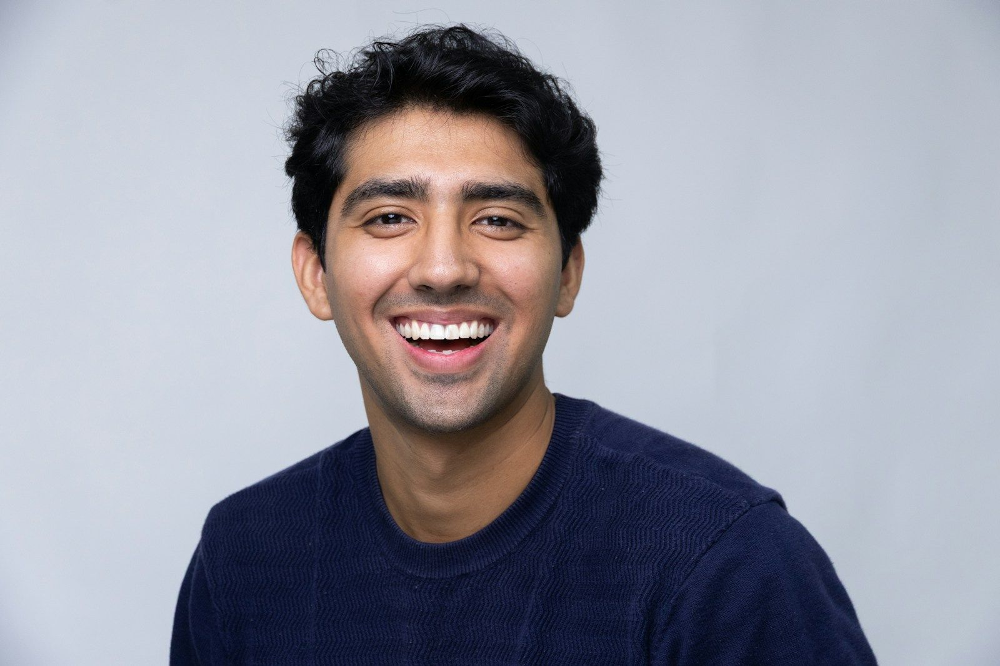
X6 Miguel en primer plano para miniaturasYouTube · Fondo liso, cara a un lado, expresión clara.
Horario
Quién tiene que estar y cuándo
Es un horario orientativo: se irá ajustando según avance la sesión. Cada persona solo deja su trabajo durante su retrato y la foto de equipo.
Edificio Impulsa8:30 – 12:20
Llegada, montaje del set de retratos y prueba de luzEdgar y Miguel
Retratos de Miguel · A1 A2 A3 A4Miguel · 20 min
Retratos de ventas · A1 A2 (y A3 de Diego)Diego, Ramón y Nicolás · unos 10 min cada uno
Retratos de desarrollo · A1 A2Iván, Alfonso, Javier, Pedro, Mario, Alejandro y José · unos 8 min cada uno
Pausa: revisamos los retratos y os ponéis la camiseta de TenderYouTodo el equipo
Foto de equipo y por áreas, fuera del Impulsa · B1 B2Todo el equipo · 30 min
Desarrollo trabajando · C1 a C4Desarrollo · 45 min
Laboral Ciudad de la Cultura12:20 – 14:00
Recoger y trasladarnos a la Laboral20 min
Ventas trabajando · D1 a D4Diego, Ramón y Nicolás · 40 min (la oficina, ya despejada)
Miguel bajo los soportales · E1 E2Miguel · 25 min
Grabación de vídeos14:30 – 16:30
Si algo se tuerce, lo primero que cae son los extras, nunca los retratos ni la foto de equipo.
Si llueve, la foto de equipo se hace dentro del Impulsa y la de Miguel bajo los soportales de la Laboral, que están cubiertos.
Dónde
Impulsa por la mañana, la Laboral a mediodía
Mañana · 8:30 – 12:20
Edificio Impulsa · Parque Científico Tecnológico
34 fotos · Retratos de todo el equipo, foto de grupo y desarrollo trabajando
Es la lista con la que hemos planificado. Si falta alguien, sobra alguien o alguien no puede a esa hora, decídnoslo y lo recolocamos.
Persona
Área
Cuándo le necesitamos
Bloques
MLMiguel López
CEO
Todo el día
A · B · E
DRDiego Rollán
Ventas
9:20 – 11:35 (Impulsa), 12:40 – 13:20 (Laboral) y vídeos de 14:30 a 16:30
A · B · D
RSRamón Somolinos
Ventas
9:20 – 11:35 (Impulsa) y 12:40 – 13:20 (Laboral)
A · B · D
NMNicolás Menéndez
Ventas
9:20 – 11:35 (Impulsa) y 12:40 – 13:20 (Laboral)
A · B · D
IGIván García
Desarrollo
9:50 – 12:20 (Impulsa)
A · B · C
AAAlfonso Alonso
Desarrollo
9:50 – 12:20 (Impulsa)
A · B · C
JNJavier Novella
Desarrollo
9:50 – 12:20 (Impulsa)
A · B · C
PLPedro Limeres
Desarrollo
9:50 – 12:20 (Impulsa)
A · B · C
MOMario Orviz
Desarrollo
9:50 – 12:20 (Impulsa)
A · B · C
AJAlejandro Jardón
Desarrollo
9:50 – 12:20 (Impulsa)
A · B · C
JRJosé Rodríguez
Desarrollo
9:50 – 12:20 (Impulsa)
A · B · C
Ropa · importante
La ropa hace la mitad de la foto
Es lo único que depende solo de vosotros, y se nota en todas las fotos. Colores lisos, sin logos y planchada.
✓ Qué traer
La camiseta de TenderYouPara la foto de equipo (B1 y B2). Todos con la misma.
Camisa o sobrecamisa lisaAzul marino, gris, piedra, blanco roto o negro. Para los retratos y las escenas.
Jersey o punto lisoComo alternativa a la camisa. Tonos tierra y neutros.
Un toque lila, si lo tenéisEs el color de la marca. Una prenda basta, no hace falta comprar nada.
Miguel: americanaSin corbata, para el retrato de prensa (A4).
Pantalón liso y calzado limpioSalen en la foto de equipo y en los de cuerpo entero.
✕ Qué evitar
Rayas finas y cuadros pequeñosEn foto hacen un efecto de ondas.
Logos grandes y estampadosNi marcas ni dibujos. Tampoco las camisetas de Cadabit.
Verde lima y flúorTiñe la piel y choca con la marca.
Blanco puro en el cuerpo enteroSobre pared blanca no se recorta bien. Mejor un tono.
Ropa arrugadaPlanchada o colgada la noche antes.
Antes de mañana
Lo que necesitamos de vosotros
Podéis ir marcando lo que esté hecho.
Plan A
Sala de reuniones del Impulsa
Planta 0, de 8:30 a 11:00. Es lo ideal: luz de ventana, una pared lisa y no molestamos a nadie.
Plan B
La sala, a otra hora
Si solo está libre más tarde, cambiamos el orden: primero la foto de equipo y las escenas de trabajo, y los retratos cuando quede libre.
Plan C
Vuestra oficina
Si no hay sala, montamos el set junto al ventanal de vuestra oficina. Necesitamos unos 3 × 3 m despejados delante de una pared clara durante esas dos horas.
Dónde se van a usar
Cada foto sale pensando en su sitio
No hacemos «fotos de equipo» en general: cada toma responde a un sitio donde vuestras caras ya aparecen o van a aparecer.
Usa A1 · vertical 4:5 · también en blanco y negro
tenderyou.com/sobre-nosotros
Sobre nosotros
Detrás de los datos hay un equipo al que puedes llamar
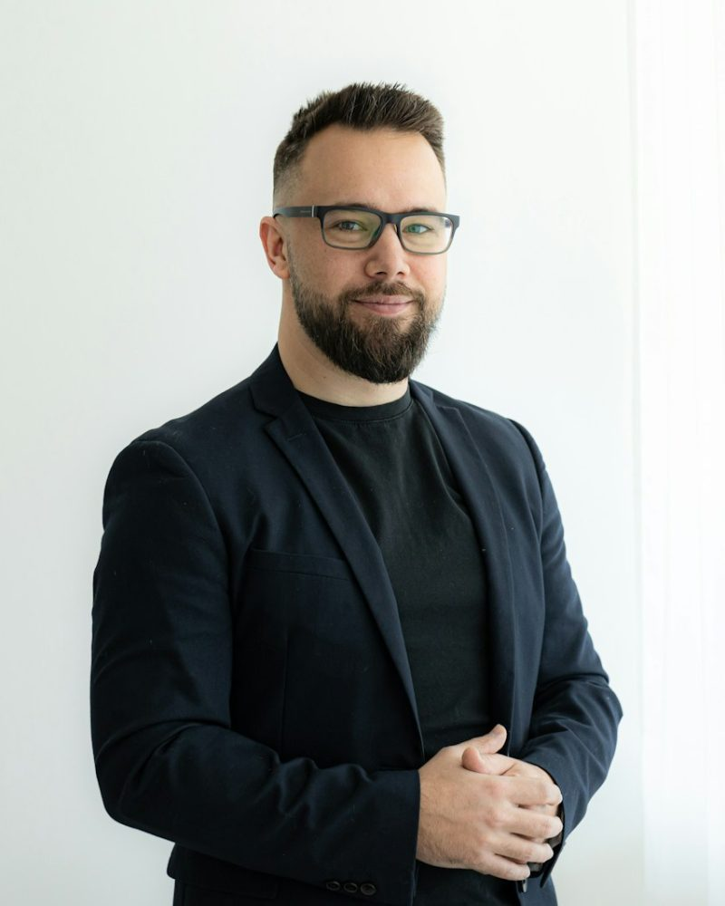
Miguel LópezCEO
Diego RollánDirector de Ventas
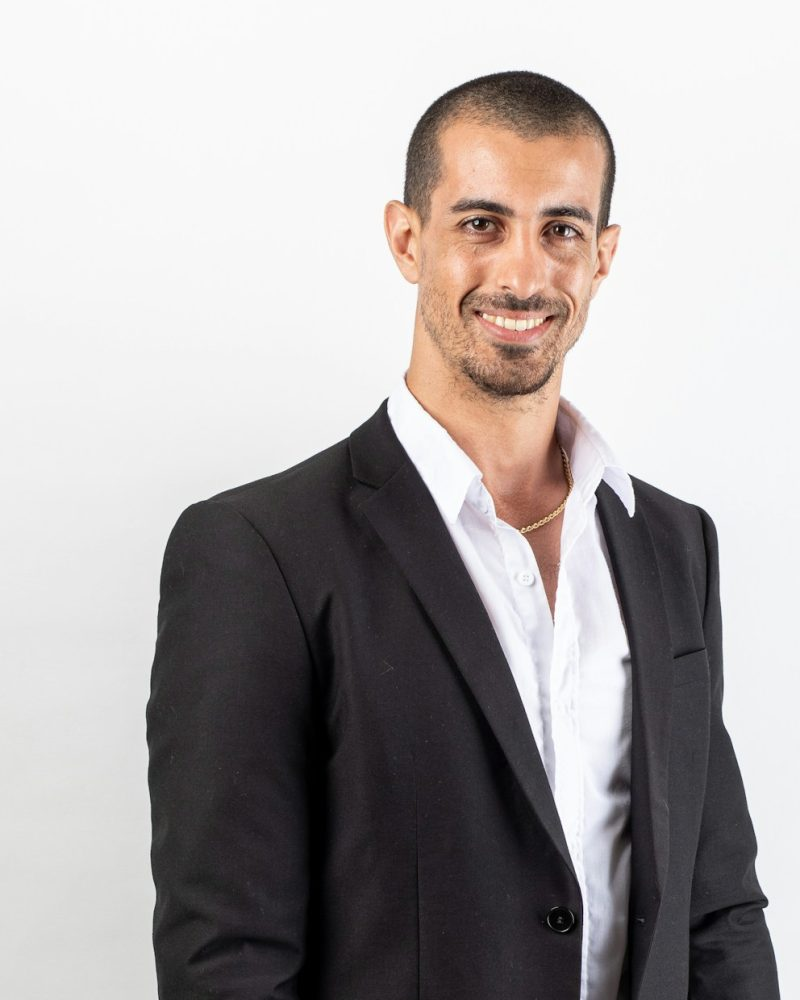
Iván GarcíaDirector Tecnológico
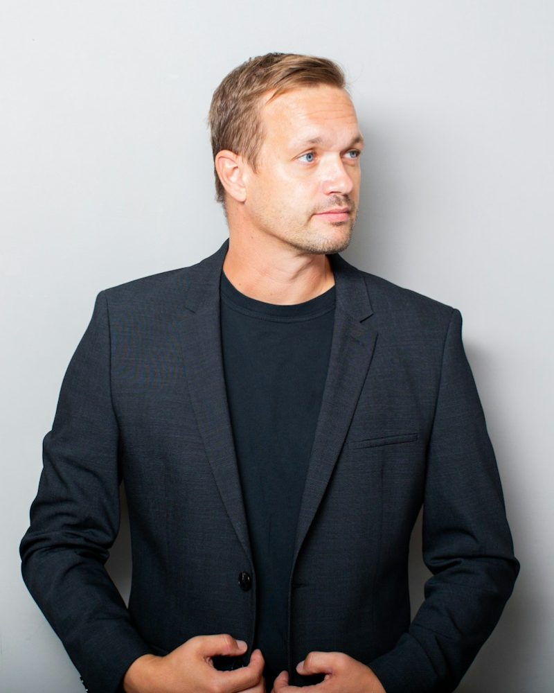
Alfonso AlonsoDirector de Desarrollo
Usa A1 en círculo y B1 para la página de empresa
Miguel LópezCEO en TenderYou · Licitaciones públicas con IAGijón, AsturiasConectar
Diego RollánDirector de Ventas en TenderYouGijón, AsturiasConectar
Iván GarcíaDirector Tecnológico en TenderYouGijón, AsturiasConectar
Usa D1 o C3 en 4:5 y E2 en 9:16
tenderyouPublicidad
¿Te enseñamos tus licitaciones?
Más información
Detrás de los datos hay un equipo al que puedes llamar
Usa C3 de cabecera y A1 en la firma
TenderYou <hola@tenderyou.com>Tienes licitaciones nuevas que encajan contigo
Hola, esta semana han salido expedientes que encajan con lo que hacéis…
Diego RollánDirector de Ventas · TenderYou
Usa A4 o E1 en alta resolución
Prensa · Economía
La startup gijonesa que quiere automatizar las licitaciones públicas
El CEO de TenderYou, en Gijón.
Usa A2 en 16:9 con aire para texto
Quién está detrás
Un equipo de Gijón que conoce la contratación pública
Simulación con fotos de referencia de otras empresas: así encajarán las vuestras en cada sitio.
Después del rodaje
Os entregamos las fotos ya listas
Os entregamos las fotos ya editadas y en sus formatos correspondientes, listas para usar.